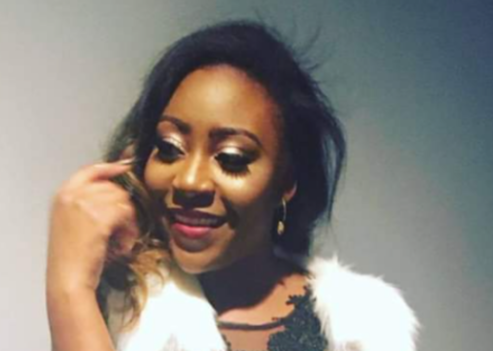

About Me
“So many people will tell you ”no”, and you need to find something you believe
in so hard that you just smile and tell them ”watch me”. Learn to take rejection
as motivation to prove people wrong. Be unstoppable. Refuse to give up, no matter
what. It’s the best skill you can ever learn.” ― Charlotte Eriksson
My name is Daniele Tenga. I have a bachelor degree in Anthropology
with a minor in Spanish. I am very laid back most of the time.
I am very outgoing. Unafraid to as questions and always open to
learning new things. I love to cook different foods. I've experimented
a lot in the kitchen with cooking household favorites with gluten
free and dairy free alternatives to them. On a usual day I am doing research.
Whether its cryptocurrency or building my portfolio or even something as simple
as what is the meaning of the word, I research.
I have two twin dogs, both are female. They are super energetic and love a
good time. I am getting into personal fitness and being disciplined on staying active.
I love to travel and experience different cultures. One of my favorite things to do
when I travel is go on new adventures. Whether it's trying new food or going
parasailing or whale watching, I am down. I believe that because we only live a
short time period exploration and curiousity it the best way to spend our time.